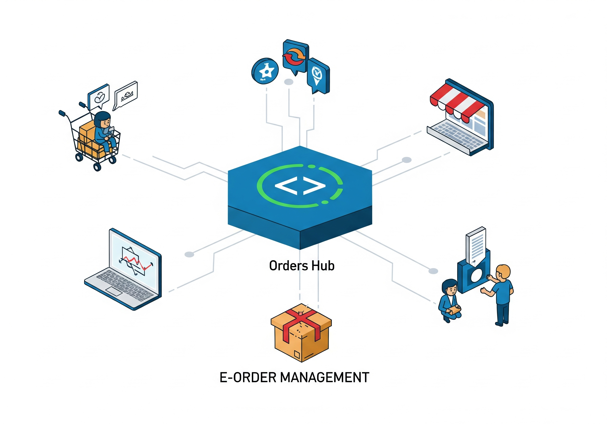

Hub Local de Integração para Pequenas Cidades — um novo olhar para o varejo

Integração logística e digital conectando marcas e pequeno varejo regional.
Como CDs digitais podem transformar o abastecimento em mercados menores
Quando falamos de inovação em varejo e delivery, a atenção quase sempre está nas grandes capitais. Mas e as pequenas cidades brasileiras? Nelas, os desafios são outros: logística fragmentada, fretes caros, prazos longos e varejistas locais sem poder de barganha frente às grandes redes.
É nesse contexto que surge a ideia de um Hub Local: um centro de distribuição físico + plataforma de integração via API, que conecta as principais marcas diretamente ao pequeno varejo da cidade.
O problema
- Cada fornecedor entrega separadamente, elevando custo de frete;
- Pequenos supermercados, farmácias e padarias não têm estoque previsível;
- Falta tecnologia para integrar demanda e oferta;
- O consumidor final já está acostumado com delivery, mas a infraestrutura não acompanha.
A proposta: Hub Local
Um CD digitalizado que funciona como ponto de convergência:
- Integração via API com fornecedores/marcas (Ambev, Nestlé, Unilever, etc.);
- API única para os pequenos lojistas, que fazem pedidos centralizados;
- Gestão logística unificada: consolidação de cargas → redução do custo de última milha;
- Marketplace local white-label: vitrine digital para cada cidade, simples e conectado ao hub.
Benefícios
- Para o lojista: um só pedido, múltiplos fornecedores, melhores prazos e estoque confiável;
- Para os fornecedores: previsibilidade de demanda, redução no custo de distribuição;
- Para a cidade: comércio local mais competitivo, geração de empregos, fortalecimento da economia regional.
MVP sugerido
- Portal + API unificada para pedidos;
- Integração inicial com 2–3 marcas âncora (bebidas + alimentos básicos, por exemplo);
- CD físico local (próprio ou parceiro logístico);
- Fluxo piloto em uma cidade de pequeno porte;
- Evolução para logística própria ou parceiros locais de entrega (motoboys, transportadoras).
Modelo de negócio
- Fee por pedido processado no hub;
- Assinatura mensal para lojistas (relatórios, integrações, suporte);
- Revenue share com fornecedores pela eficiência logística e visibilidade de dados.
Visão de futuro
Esse modelo pode se expandir em rede: hubs interligados formando uma malha nacional de distribuição inteligente, onde dados de consumo local alimentam decisões de estoque e reposição em tempo real.
Chamado à ação
Se você acredita que inovação também precisa chegar às pequenas cidades, vamos conversar. A proposta é simples, mas poderosa: um Hub Local que conecta marcas, lojistas e consumidores de forma eficiente e digital.
Gostou da ideia? Deixe seu comentário, marque alguém que pode se interessar ou mande uma mensagem para trocarmos ideias.